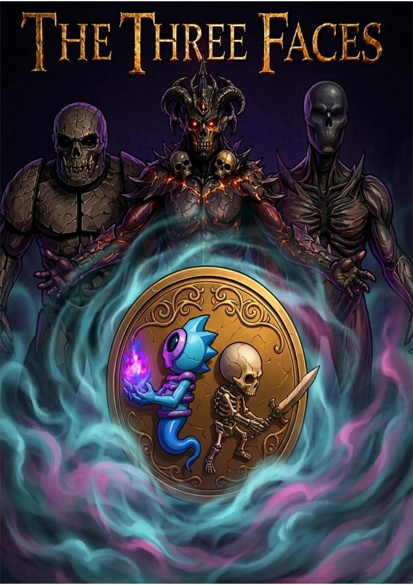

En un mundo donde el destino se decide con un simple lanzamiento,
existen tres antiguas deidades que rigen el equilibrio del azar: Cara,
Cruz y Canto.
Juntas mantienen la balanza entre el orden y el caos,
la materia y el espíritu, lo tangible y lo etéreo. Pero hace tiempo,
Canto desapareció. Sin su presencia, Cara y Cruz entraron en guerra eterna,
arrastrando al mundo a un ciclo de cambios impredecibles. Los humanos
quedaron atrapados entre realidades: mitad vivos, mitad fantasmas,
sin pertenecer a ningún lado.
Tú eres uno de ellos, un alma dividida que
porta la moneda original, reliquia creada por las tres deidades. Con cada
lanzamiento, invocas su poder, cambiando entre cuerpo y espíritu.
Tu misión es restaurar el equilibrio, derrotando primero a Cara, guardiana
del mundo material, luego a Cruz, soberana del mundo espectral, y finalmente
enfrentarte a Canto, el azar absoluto, donde toda elección pierde sentido.
SINOPSIS
